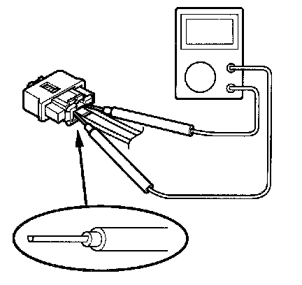
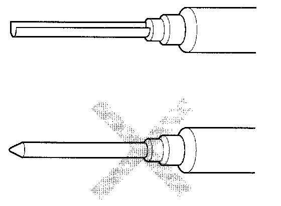
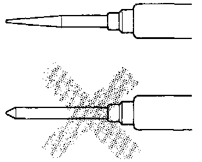
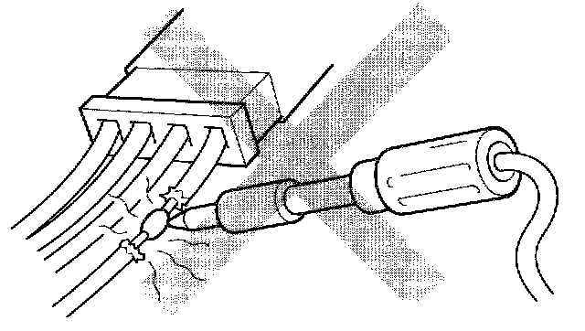
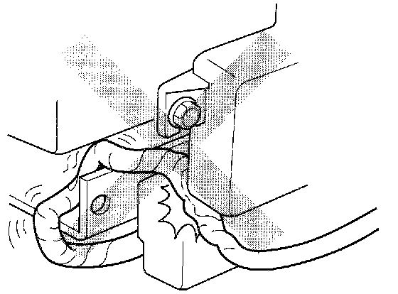

Precautions For Electrical Inspections

When using electrical test equipment, insert the probe of the tester into the wire side of the connector. Do not insert the probe of the tester into the terminal side of the connector, and do not tamper with the connector. Inserting the probe into the terminal side of the connector, and tampering the connector could cause malfunction of the SRS system or an error in inspection.


Use a probe with the correct tip. Do not insert the probe forcibly.
Use specified service connectors in troubleshooting. Using tools which are not specified standard design could cause an error in inspection due to poor metal-to-metal contact.

Never attempt to modify, splice or repair SRS wiring.
NOTE: SRS wiring can be identified by special yellow outer protective covering.

Be sure to install the harness wires so that they are not pinched or interfering with other parts.
Make sure all SRS ground locations are clean and grounds are securely fastened for optimum metal-to-metal contact. Poor grounding can cause intermittent problems that are difficult to diagnose.